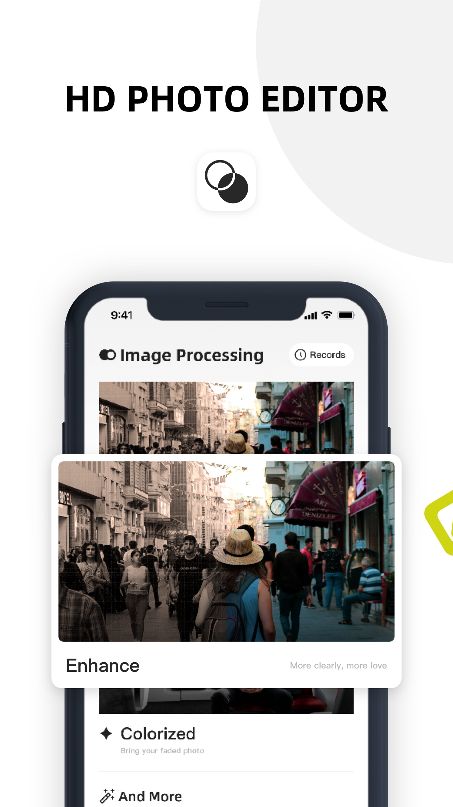
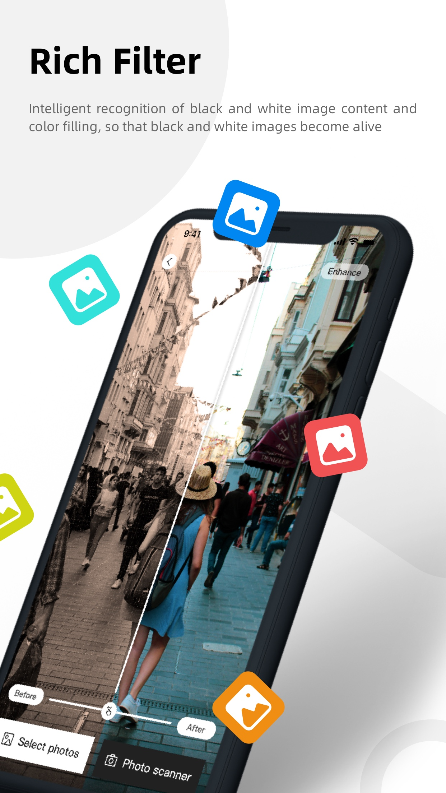
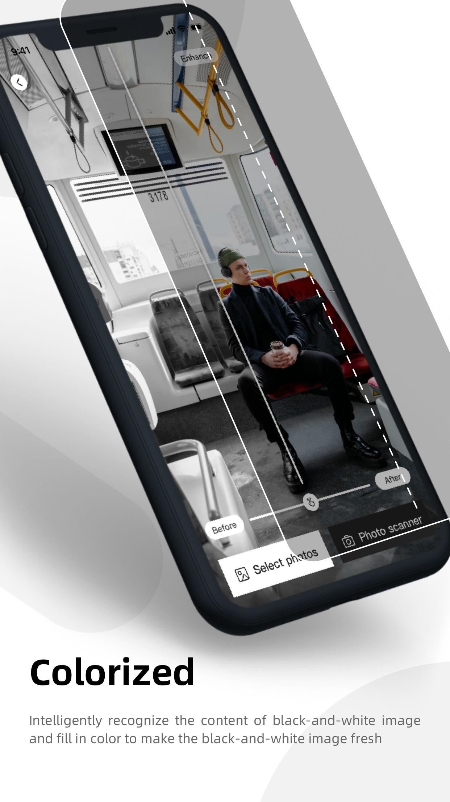

HD Photo Editor: Enhance Pic
Screenshots



Description
Make your blurry old photos clear HD photos with just one click. It's like magic!
Use powerful AI technology for photo enhancement and restoration. Sharpen your blurry photos.
Repair your blurred or damaged photos and make your memories no longer blurred!
Key Features:
HD Photo: Repair blurred photos to make them clear and make portrait photos better
Colorized: Restore lifelike colors for your black and white photo
Enhance: Enhance the old photos in memory to HD
You can see the effect immediately with just one click. Come and download to experience.